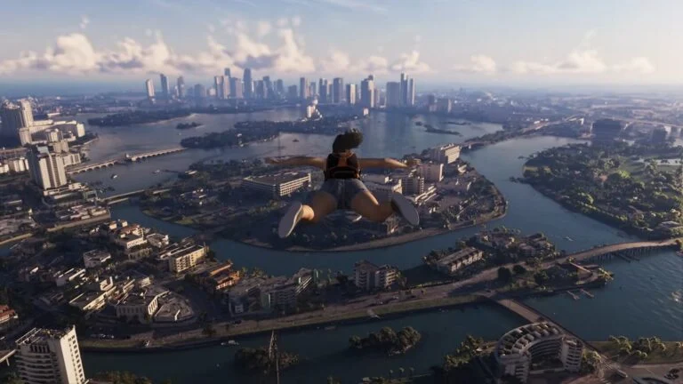

EPod · 29 de agosto de 2026 · 2 min de lectura
El mundo abierto de Grand Theft Auto 6 sería considerablemente más grande que cualquiera de los anteriores juegos de Rockstar, según información proporcionada por un creador de contenido que pudo probar el título durante varias horas en las oficinas de Rockstar North.
El dato fue compartido por el YouTuber TGG, quien tuvo acceso a aproximadamente tres horas de GTA 6 antes de la presentación Grand Theft Auto 6: An Extended Look de Netflix. Durante su visita también pudo conversar con Rob Nelson, responsable de desarrollo de Rockstar.
Según Nelson, el mapa completo de GTA 6 será aproximadamente el doble de grande que el de GTA 5 y tres veces más grande que el de Red Dead Redemption 2.
La comparación también se extiende a sus principales ciudades. Vice City, el escenario central de GTA 6, tendría aproximadamente el doble de tamaño que Los Santos. Si además se tienen en cuenta las zonas suburbanas que rodean ambas ciudades, el área de Vice City sería aproximadamente once veces más grande que Los Santos y sus alrededores.
TGG aseguró que el principal mensaje que Rockstar quiso transmitir durante su presentación fue precisamente la enorme escala del nuevo juego. Rob Nelson llegó a mostrarle personalmente alrededor de dos horas y media de gameplay, además del material que el creador ya había podido observar previamente.
Las imágenes publicadas durante An Extended Look también permitieron apreciar algunas tomas aéreas y panorámicas de Vice City, dando una primera impresión de la escala del mundo que está construyendo Rockstar.
La dimensión del mapa no será, sin embargo, el único aspecto destacado de GTA 6. Rockstar también confirmó recientemente que el juego funcionará a 30 FPS en consolas durante su lanzamiento, mientras que todavía no se ha confirmado la existencia de un modo de rendimiento a 60 FPS.
Grand Theft Auto 6 tiene actualmente prevista su llegada para el 19 de noviembre de 2026.